Voor Computer vision heb ik het programme processing gebruikt. Met dit programma kunnen beelden worden gemaakt door middel van code. Ook kan dit interactief worden gemaakt en er kan een animatie op toe worden gepast.
Bij de eerste opdracht heb ik door middel van coderegels in processing drie soorten ovalen gemaakt met elke een ander kleur en borderkleur, maar ook een andere positie.
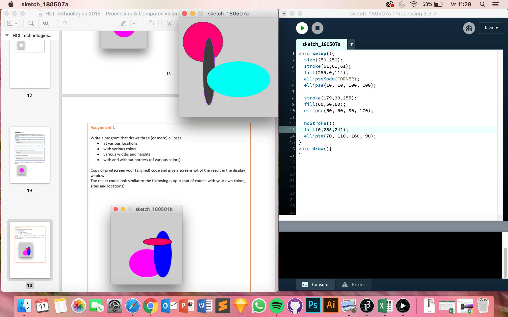 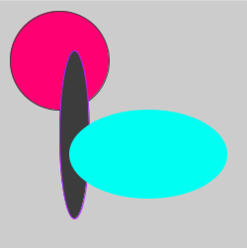 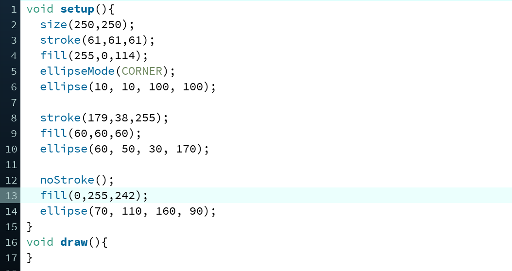Bij deze opdracht moest ik verschillende soorten figuren maken met andere kleuren en andere posities.
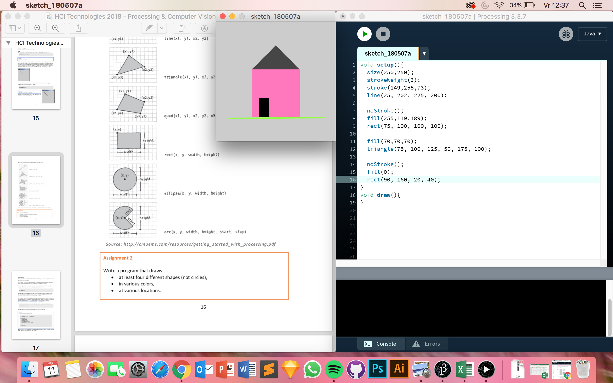 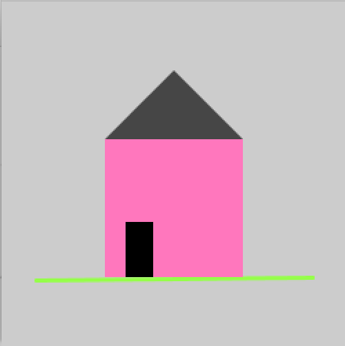 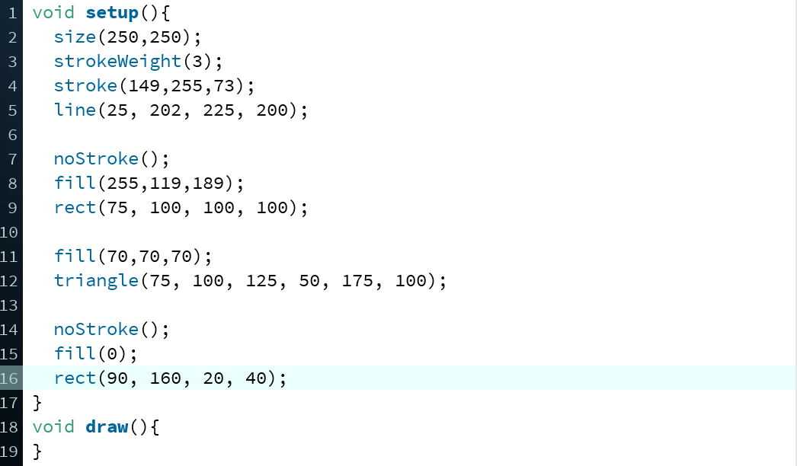Bij deze opdracht moest ik twee figuren interactief maken. Dit heb ik gedaan door een circel aan een strook te maken en het uiteinde (de circel) volgt hierbij de muis van de gebruiker.
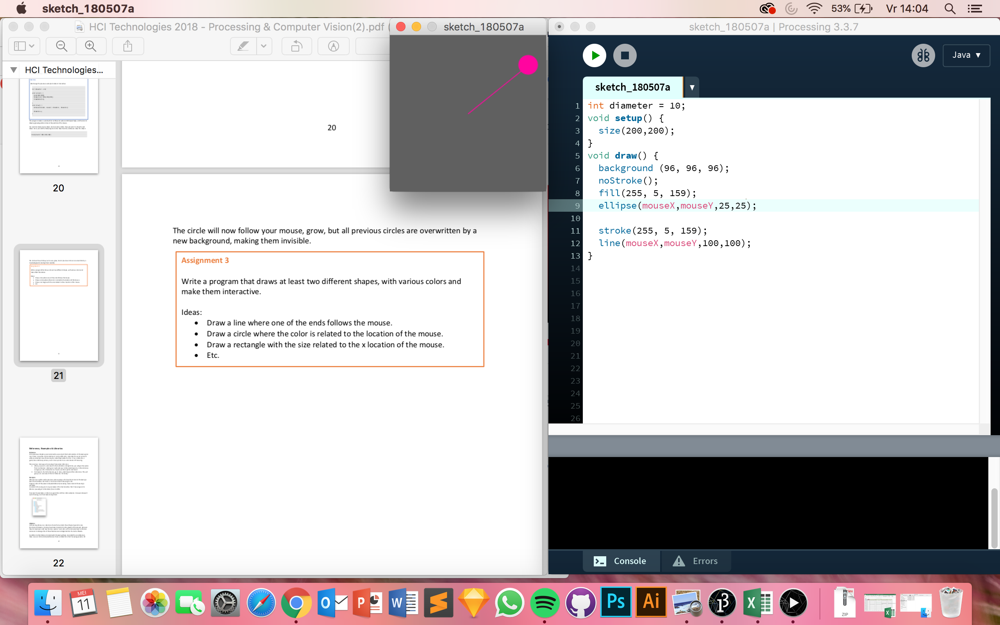 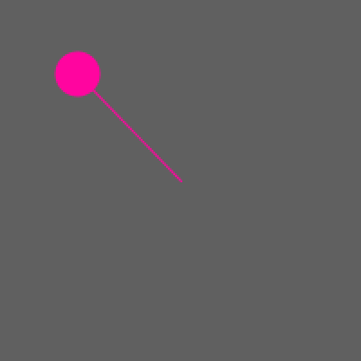 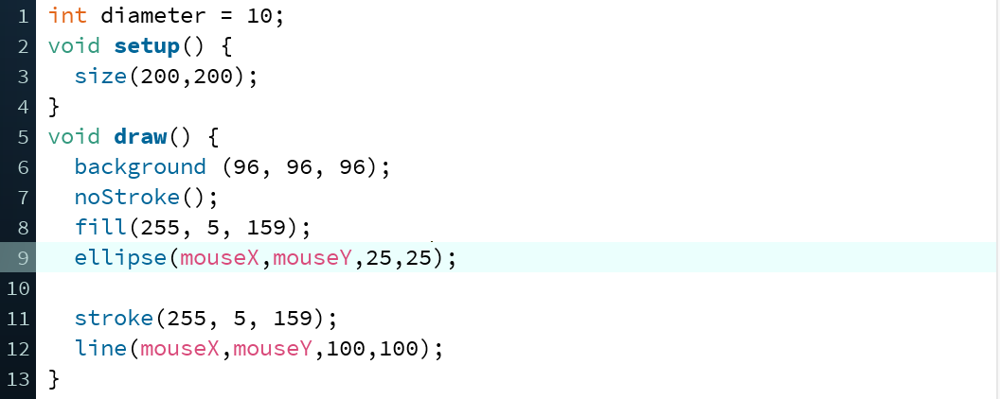Bij deze opdracht moest ik de camera van mijn laptop combineren met processing. Op deze manier moest mijn gezicht herkent worden door het programma aan de hand van mijn geschreven code en moest er een circel om mijn gezicht heen verschijnen.
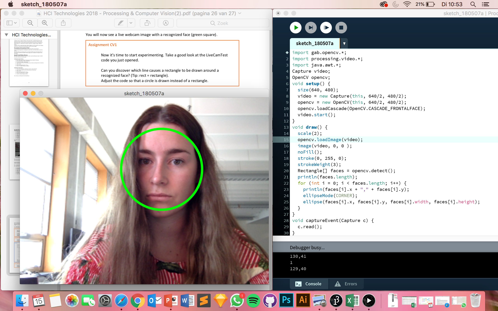Bij deze opdracht heb ik weer de camera gecombineerd met processing en heb ik ervoor gezorgt dat er een 'clownsneus' op mijn neus verschijnd en vierkante blokjes op mijn ogen. Het programma hertkent dus deze gezichtselementen.
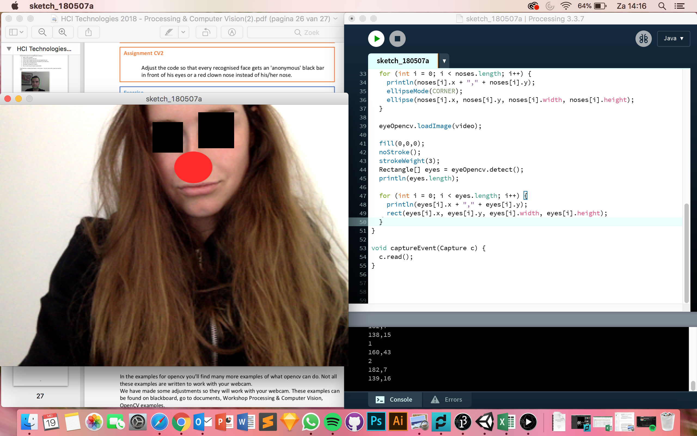 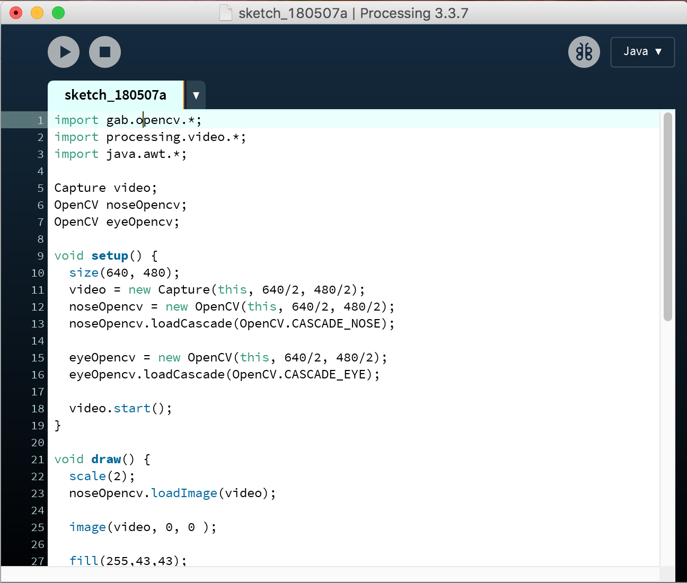 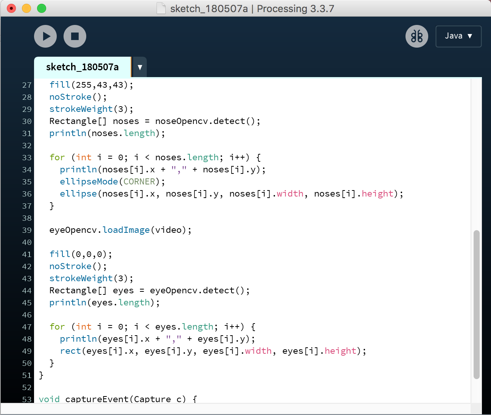 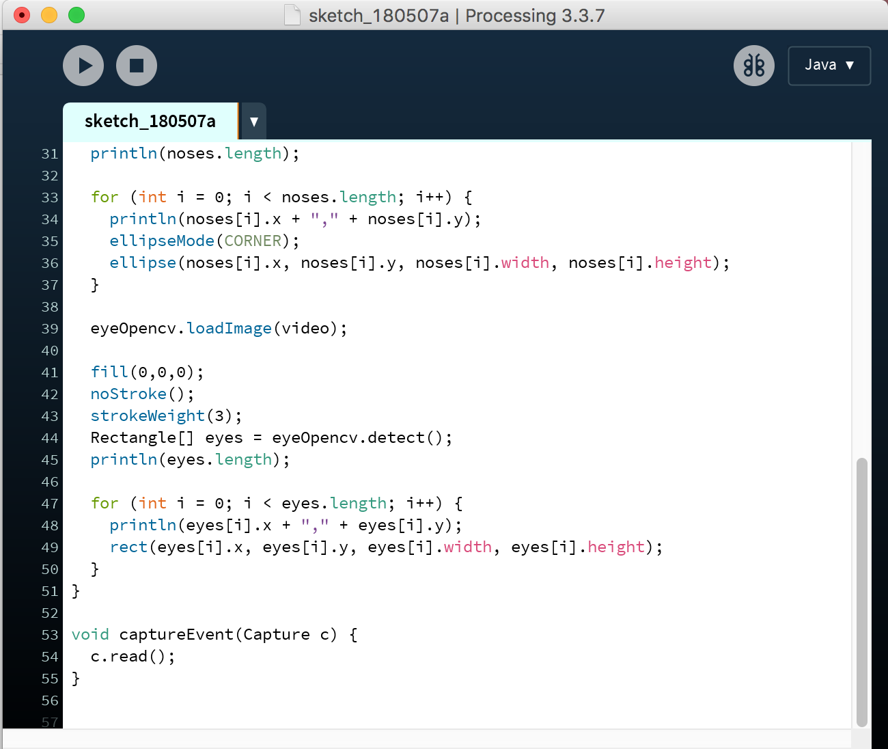Dit was een vrije opdracht waarin ik een voorbeeld heb gekopieerd en uitgeprobeerd. Vervolgens wilde ik meerdere mogelijkheden toepassen maar dat kwam niet rechts in beeld toen ik bijvoorbeeld een 5e element aanklikte. Echter had ik bovenstaande opdracht an uitgebreid waardoor deze ook bij 6 kon staan.
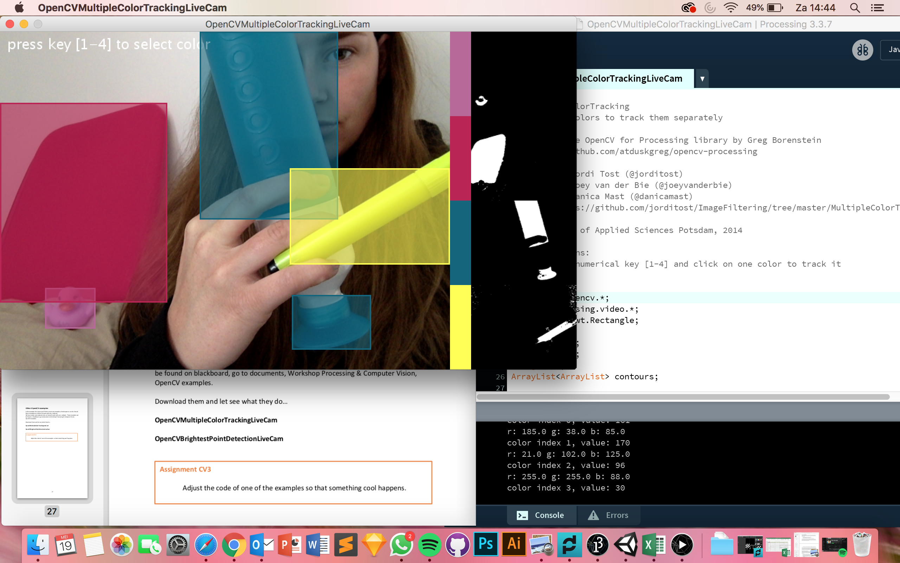